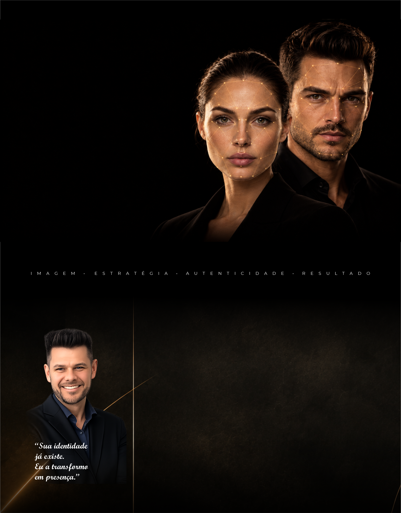
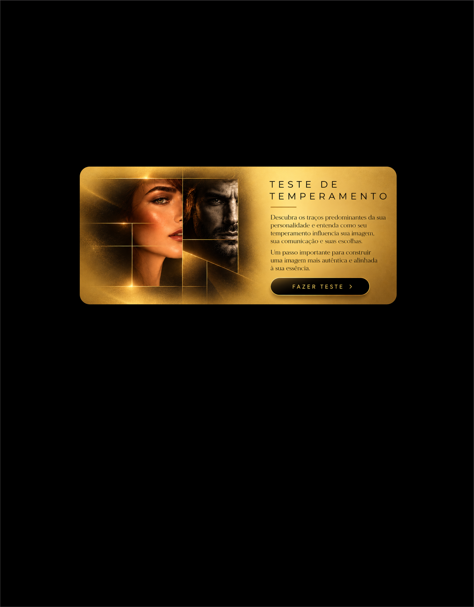
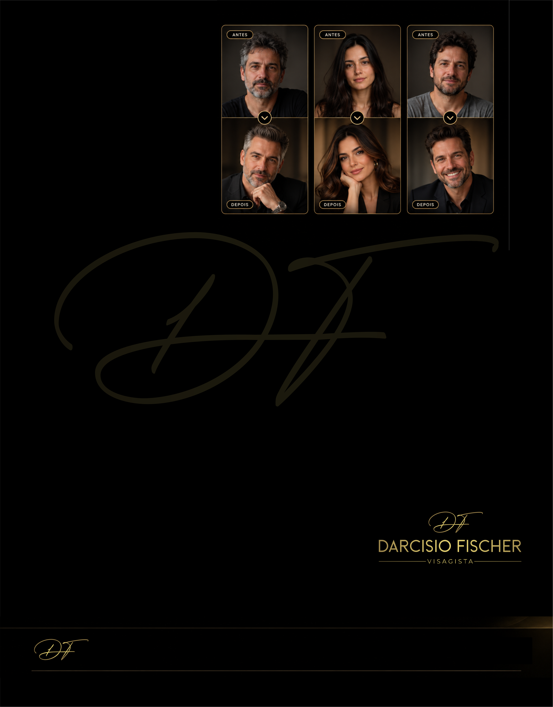

Sua imagem
comunica antes
mesmo de você
dizer uma palavra.
O visagismo vai além da estética. É a arte de unir personalidade, estilo e expressão para criar uma imagem que revela o melhor de você.
DESCUBRA O SEU PERFILIMAGEM · ESTRATÉGIA · AUTENTICIDADE · RESULTADO
DARCÍSIO FISCHER
Da tesoura à
estratégia
Nascido em 1977, em Pato Branco (PR), Darcísio Fischer mudou-se com a família para o Oeste de Santa Catarina em 1992. Em 1996, seguiu sozinho para Balneário Camboriú, onde iniciou sua carreira como Hair Stylist, em 2004.
Em 2006, ampliou seus conhecimentos com uma formação internacional na escola Pivot Point, dando continuidade a uma trajetória de constante aperfeiçoamento. Em 2010, tornou-se visagista e, em 2016, coach e analista comportamental, expandindo seu olhar para além da estética.
A união de toda essa experiência e conhecimento deu origem ao Método Fischer — Código da Imagem, uma metodologia autoral que conecta beleza, identidade e comportamento.

O QUE É VISAGISMO?
Não se trata apenas
de aparência.
Trata-se de identidade.
M É T O D O
Código da Imagem
Decifro sua essência. Revelo sua beleza.
Uma metodologia autoral que une visagismo, análise comportamental
e estética para transformar a aparência em expressão autêntica da sua alma.

RESULTADOS
Transformações
reais
Cada imagem conta uma história. Confira alguns dos resultados que mostram o impacto do visagismo na vida real.
VAMOS CONVERSAR?
VAMOS TRANSFORMAR
SUA IMAGEM?
Agende sua consultoria e descubra como o visagismo
pode revelar o melhor de você.
PERGUNTAS FREQUENTES
TIRE SUAS DÚVIDAS
O que é visagismo?
É uma abordagem de imagem pessoal que considera traços do rosto, estilo, personalidade e objetivos para propor escolhas que respeitem a identidade de cada pessoa.
Quais os benefícios do visagismo?
Ajuda a construir uma imagem mais coerente com quem você é, valorizar características e comunicar com mais autenticidade e intenção.
Como funciona a consultoria?
Começamos por uma conversa sobre sua rotina, características e objetivos. A partir da avaliação individual, definimos possibilidades de estilo e imagem.
Quanto tempo dura o atendimento?
A duração varia conforme os objetivos e as etapas da consultoria. Entre em contato para receber os detalhes antes de agendar.
O visagismo atende apenas homens?
Não. O atendimento é personalizado para mulheres e homens, respeitando as características e necessidades individuais.